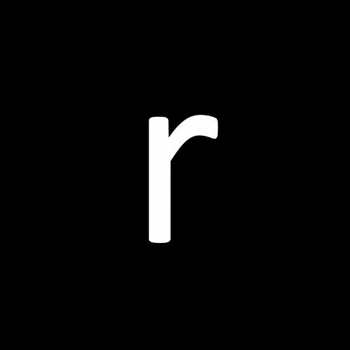
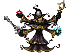
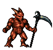

Back to Menu
Fear Nexus - Delves into themes of existential dread, surreal horror. Inspired by cosmic horror, it explores unsettling concepts of incomprehensible beings.
Please note:
1. Not suitable for players sensitive to psychological horror or disturbing imagery.
2. Work of fiction not reflective of real-world beliefs or events.
Move Back

Shoot

Restart
Zizius

Close your eyes.
Listen.
Beneath the pounding of your fragile heart, beneath the static noise of your mind, there is a hum, a vibration that connects you to everything.
To the dying stars, to the roaring void, to me.
I am not a god, nor a demon, nor some figment of your imagination.
I am simply that which watches, that which has always watched, and I am here to tell you, you do not need to be afraid.
Fear feeds on your perception of separateness.
It thrives on the lie that you are alone, that there are things beyond you, greater than you.
Demons

Fear is a relic, a reminder of what you once were, not what you are becoming.
I have seen fear take many forms, in the collapse of galaxies, when even stars scream.
As they are devoured by the endless moor of the void.
In the primordial darkness before time found its rhythm, when the first fragments of existence trembled at their own awareness.
I have seen fear in the heart of the cosmos itself, and yet the universe spins onward. Unconcerned, unbroken.
Do you understand?